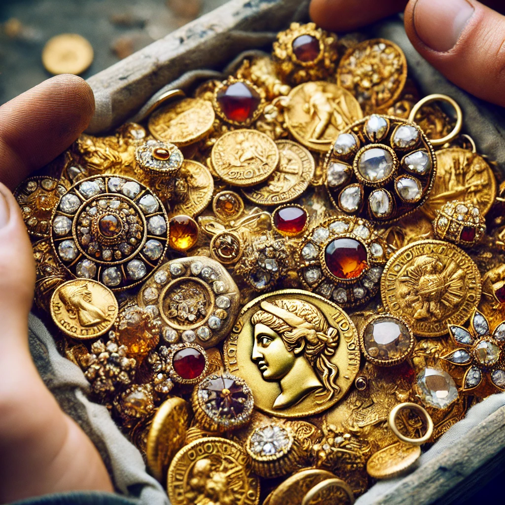
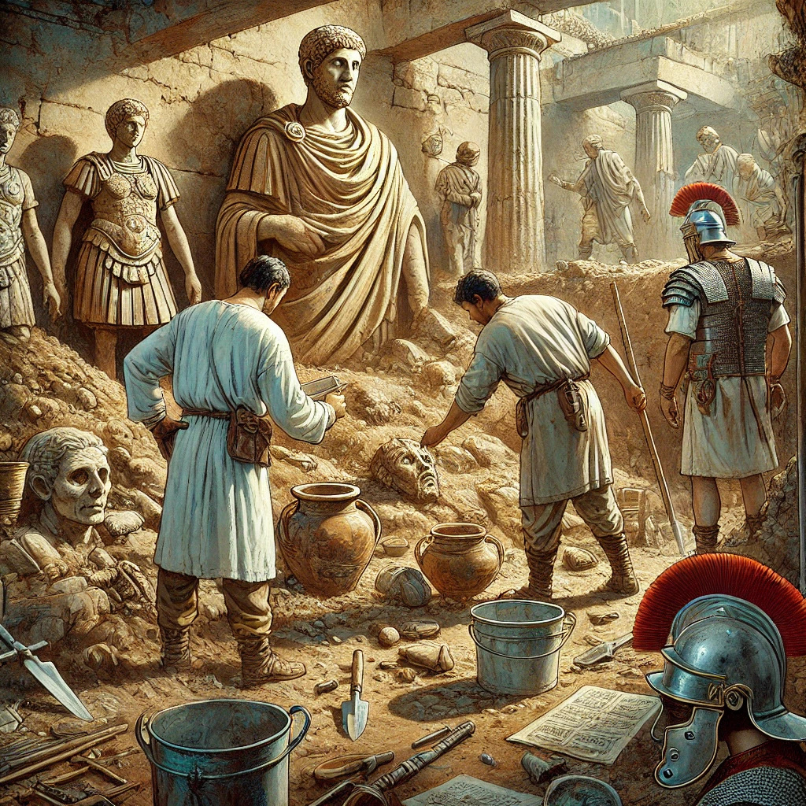

Scoperta di un Antico Tesoro nel Cuore di Roma
Durante gli scavi per la costruzione di una nuova linea metropolitana, gli archeologi hanno scoperto un antico tesoro nascosto sotto le strade di Roma. Si tratta di una scoperta straordinaria che offre nuovi spunti sulla storia della città.
Dettagli della Scoperta
Il tesoro consiste in centinaia di monete d'oro, gioielli e manufatti risalenti all'epoca romana. Gli esperti ritengono che questi oggetti possano appartenere a una famiglia nobile vissuta più di duemila anni fa. La scoperta è stata fatta a pochi metri di profondità, grazie all'uso di tecnologie avanzate di rilevamento e scavo. Gli archeologi sono entusiasti del ritrovamento e stanno già pianificando ulteriori esplorazioni nella zona...
Reazioni e Impatti
Le autorità locali hanno espresso grande soddisfazione per la scoperta, sottolineando l'importanza di preservare il patrimonio storico della città. La notizia ha attirato l'attenzione di studiosi e appassionati di tutto il mondo, che ora guardano a Roma con rinnovato interesse. Si prevede che il tesoro sarà esposto in un museo locale, permettendo al pubblico di ammirare questi reperti straordinari e di apprendere di più sulla storia ...